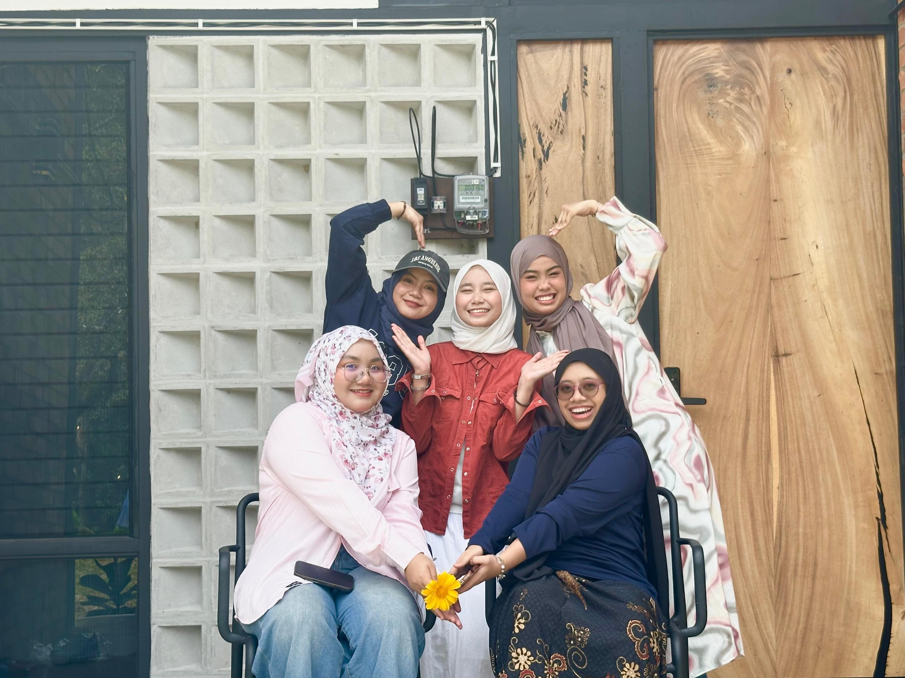
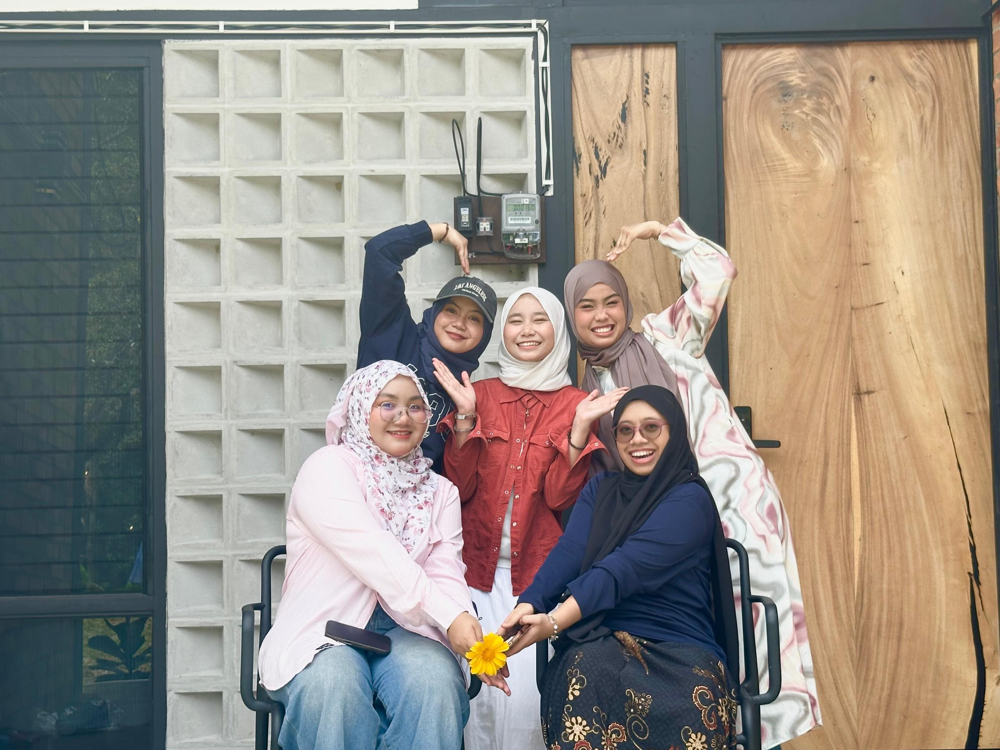

Hello! My name is Nur Ain Farhana, but you can call me Hana.
I am 21 years old and known for being a happy-go-lucky person with a positive outlook on life.
I believe that with focus and determination, anything is achievable.
When I set my sights on a goal, I give my full effort to make it happen.
I value teamwork and always strive to contribute to a supportive and collaborative working environment.
I enjoy expressing myself through my personal style and take pride in presenting myself with confidence and creativity.
In my free time, I enjoy capturing moments through photos and videos whether it is of myself or beautiful scenery.
I also love cooking, baking, and creating short video edits using CapCut.
Occasionally, I like to draw as a form of relaxation and self-expression.
I come from a big family with five siblings, and I am the youngest among them.
My dream is to grow within this industry by using my creativity and strengths to make a meaningful and lasting impact.


 
